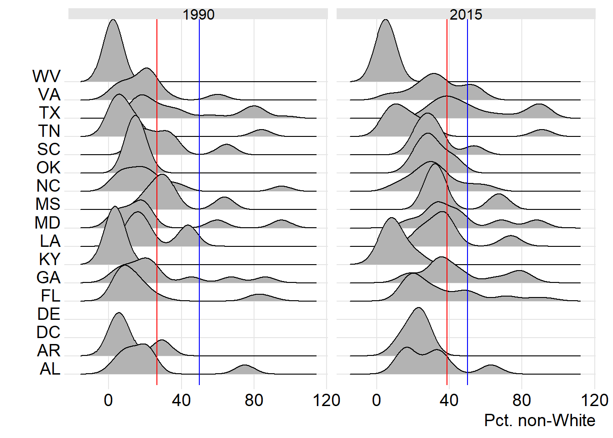

Chapter 2 Chapter template
2.1 Overview
(Write briefly about this region, listing the states included within it, the range of seats/districts for each state, and the general partisan landscape (lean Republican vs. Democratic). The “include=FALSE” below keeps the code itself out of the document.)

2.2 Descriptive analysis
(Include both ridge plots and maps here showing your independent variable. Interpret what both tell you. You may also want to include state median values/IQR to help describe the patterns you see.)
2.3 Models
(Include models for both years and scatterplots/fit lines. Interpret the coefficients and measures of model strength, focusing on direction, magnitude, and significance.)
2.4 Diagnostics
(Look at model residuals using density plots and maps as shown in the assignment. Does your model show any warning signs based on this output).
2.5 Summary
(What did this analysis tell you about the research questions: the relationship between your variable and voting and changes in the variable and its relationship to voting across time periods?)